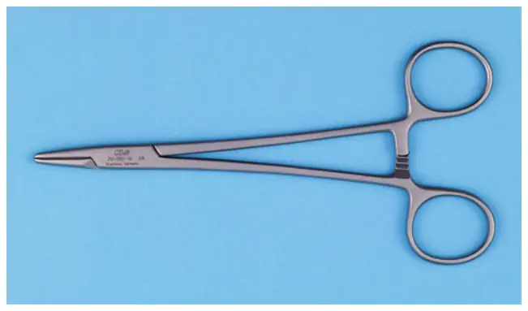
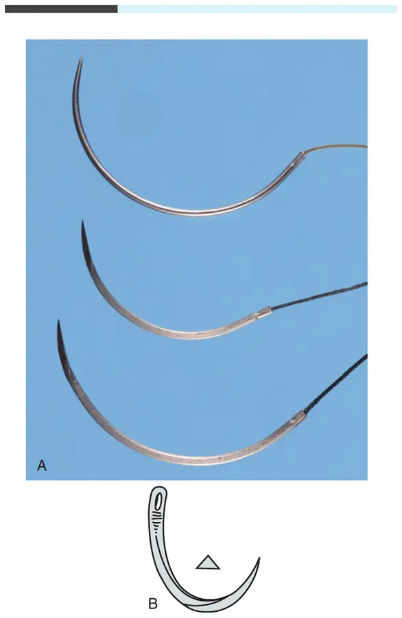

نسخه استخراجشده؛ ترجمه یا تأیید علمی انجام نشده است. وضعیت: captured
نیدل هولدر دستهی قفلشونده و فک کوتاه و بلانت دارد. برای بخیهی داخل دهان، طول ۷ اینچ (۱۵ سانتیمتر) توصیه میشود. فکهایش از هموستات کوتاهتر و قویترند، و سطح فک کوتاهتر شبکهی متقاطع (cross-hatch) دارد تا سوزن مطمئن گرفته شود.

طرز گرفتن: شست و انگشت حلقه داخل حلقهها، انگشت اشاره در طول ابزار برای ثابت کردن و هدایت، انگشت دوم برای کنترل قفل. انگشت اشاره را داخل حلقه نکن — کنترل بهشدت افت میکند.
سوزن: برای مخاط دهان معمولاً نیمدایره یا سههشتم دایره. انحنا اجازه میدهد در فضای محدود با یک چرخش مچ عبور کند. نوک سوزن مخاط مثلثی در مقطع است یعنی برنده (cutting). نخ در کارخانه به سوزن سوآژ شده است.
عدد کلیدی: سوزن خمیده را در دوسوم فاصله از نوک تا انتها بگیر — آنقدر از سوزن بیرون بماند که از بافت رد شود، و نیدل هولدر بخش قوی سوزن را بگیرد تا خم نشود و نوکش کند نشود.
نخ بر اساس قطر، جذبیبودن و تکرشته یا چندرشتهای طبقهبندی میشود. قطر با صفرها نشان داده میشود: ۳-۰ رایجترین قطر برای مخاط دهان است؛ ۲-۰ و ۰ ضخیمترند، و ۴-۰، ۵-۰، ۷-۰ نازکتر — نخهای خیلی نازک مثل ۷-۰ برای جاهای دیدهشوندهی پوست مثل صورت، چون بخیهی ریزِ درستگذاشتهشده جای زخم کمتری میگذارد.
دو خانوادهی قیچی که قاطی نمیشوند:

قیچی بافت را برای بریدن نخ به کار نبر — نخ لبهها را کند میکند و از آن به بعد هنگام برش بافت، تروماتیکتر میشود. قیچی را هم مثل نیدل هولدر بگیر.
باز نگه داشتن دهان. در کشیدن دندانهای پایین باید فک را حمایت کنی تا به TMJ فشار نیاید. بایت بلاک یک بلوک لاستیکی نرم است: بیمار دهانش را تا حد راحت باز میکند، بلاک گذاشته میشود و بدون تلاش بیمار دهان باز میماند. برای بیشتر بزرگسالان، بایت بلاک سایز کودک روی مولرها کافی است. اگر باز شدن بیشتری لازم داری، بیمار باید بیشتر باز کند و بلاک عقبتر برود.
Molt (پروپ کناری) با مکانیسم جغجغهای کار میکند: با بستن دسته، دهان بازتر میشود. برای بیمار عمیقاً سدیتشده یا تریسموس خفیف. با احتیاط — نیروی زیادی به دندانها و TMJ وارد میکند.
با هر پروپی، دهان را بیش از حد باز نکن — استرس روی TMJ و گاهی آسیب کششی مفصل که خودش درمان جدا میخواهد. در اعمال طولانی، هر از گاهی پروپ را دربیاور تا بیمار فک را حرکت دهد و عضلات استراحت کنند.
ساکشن جراحی دهانهی باریکتر از ساکشن معمولی دارد تا مایع سریعتر تخلیه شود، و معمولاً چند سوراخ دارد تا بافت نرم مکیده و آسیب نبیند. ساکشن Fraser یک سوراخ روی دسته دارد: هنگام بریدن بافت سخت با شستوشوی فراوان سوراخ را میبندی تا مایع سریع برود؛ هنگام ساکشن بافت نرم بازش میگذاری تا بافت آسیب نبیند یا نوک را نبندد.
تاول کلیپ دراپها را سر جایشان نگه میدارد — دستهی قفلشونده و نوک تیز یا بلانت. با نوک تیز مراقب باش پوست زیر دراپ را نگیری.